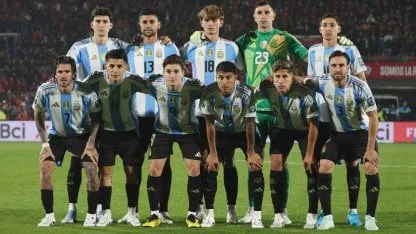

a Selección Argentina venció 2-1 en un amistoso internacional y se prepara con confianza para la próxima Copa América. El equipo mostró un buen rendimiento, con un ataque rápido y una defensa sólida. El técnico destacó que el plantel está encontrando “la identidad de juego” de cara al torneo. Los goles fueron convertidos en la segunda parte, lo que generó entusiasmo entre los hinchas que esperan revalidar el título continental.

Además, varios juveniles tuvieron minutos en cancha, lo que ilusiona al cuerpo técnico pensando en el recambio generacional.